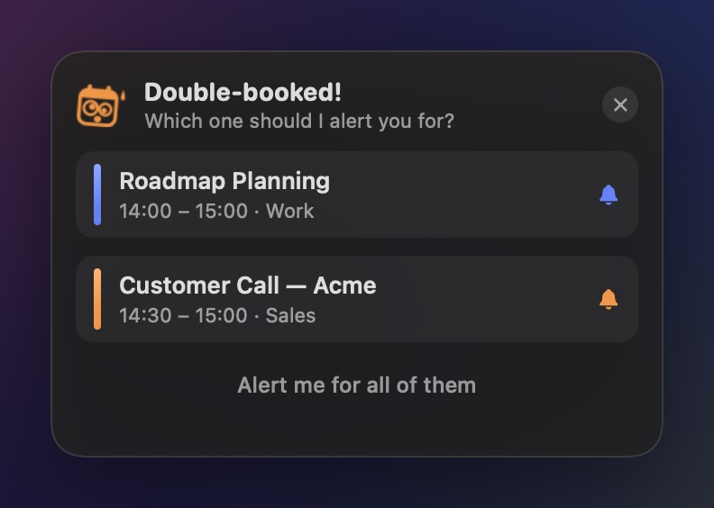

Cadence
Your calendar, gently panicking on your behalf. A tiny native macOS menu-bar app that makes sure you're never late for a meeting again.


A full-screen nudge you can't miss
30 seconds before a meeting (configurable), Cadence covers every display with a countdown and a big Join button.
Return joins · Esc dismisses · Snooze nags you again a minute later.

…but never while you're presenting
Sharing your screen in Zoom or Teams, or running a Keynote or PowerPoint slideshow? Displays being shown are never covered — a small banner appears elsewhere instead.
On a call? You get a quiet banner with no focus stealing.

Today, at a glance
Click the menu bar for a colour-coded agenda with times, attendees, a live NOW badge and one-click Join on everything joinable.
In-person meetings get a map, live travel time and a "leave in 12m" hint.

Double-booked? It asks.
When two real meetings overlap, Cadence asks which one you want alerts for. Your choice sticks; the other is quietly muted.
Everything else
🔗 Join links from anywhere
Zoom, Meet, Teams, Webex, Slack huddles, FaceTime and more — even buried in HTML invites or wrapped in SafeLinks.
⌨️ Global join shortcut
⌃⌥⌘J joins whatever's starting in the next 10 minutes, or the one you're late for.
⏱️ Floating countdown
A glass pill above every window, on every Space. Drag it anywhere — it snaps to edges.
🗂️ Every calendar
macOS Calendar (iCloud, Google, Exchange, CalDAV), ICS/webcal feeds and direct Google Calendar. Duplicates merged.
🧹 Filters
Hide all-day, declined, tentative or link-less events; include or exclude by keyword.
😰 An icon with feelings
Calm, nervous at 15 minutes, sweating at 5.
🔒 Your calendar stays on your Mac
No accounts, no analytics, no servers. Cadence only talks to the calendar services you connect and Apple Maps for travel times.
Read the privacy policy →